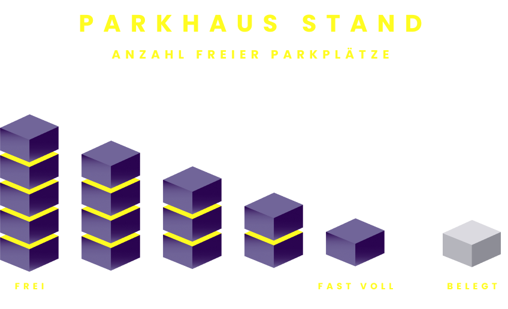

LEGENDE

Die folgende Karte visualisiert das aktuelle Passantenaufkommen an der Vadianstrasse, St.Gallen und den verfügbaren Parkplätzen in den umgelegenen Parkhäusern.


12:00
Aktuell sind XXX Passanten in St.Gallen an der Vadianstrasse unterwegs.
Deshalb sind nur noch XXX Parkplätze in den umgebenen Parkhäusern verfügbar
Für diese Menge an Passanten sind eher weniger/viele/gleichviele Parkplätze frei wie üblich/als üblich.